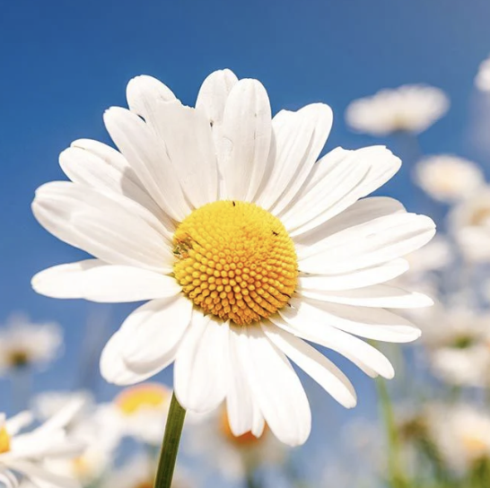
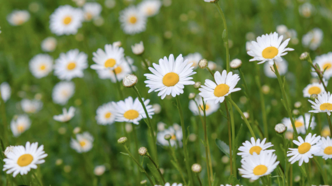

daisys are most comenly pretty white flowers with yellow pollen in the center, they sometimes have pink tips. they have short green stems and are most famopus for daisy chains and crowns. I have always loved daisys and one of my favorite activitys as a child was to go to a nearby park and try to find the daisys whith the most pink.


daisys can be found all around the world exept in places like antartica.
daisys reprosent inocence and purity and can be used in bouqetes to reprosent new beginings. colors: yellow can symbolize frendship, pink reprosents love, and white can symbolize purity.